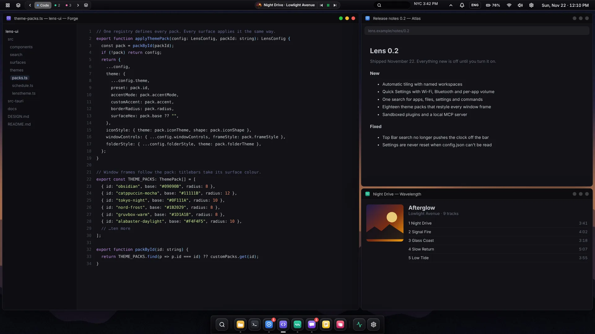
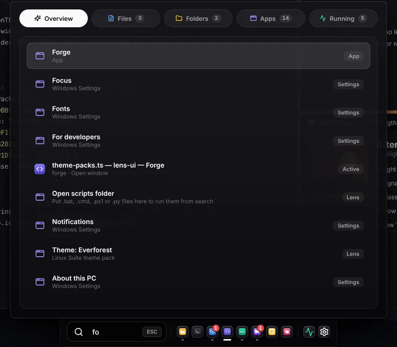
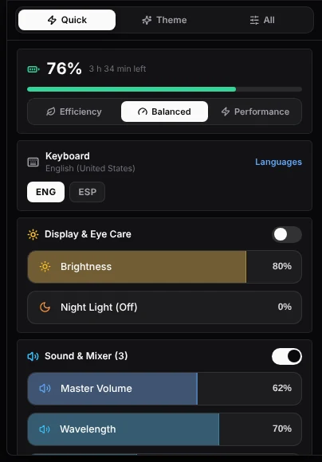
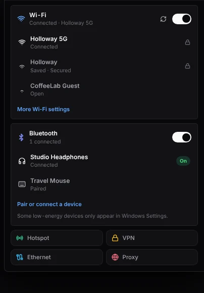
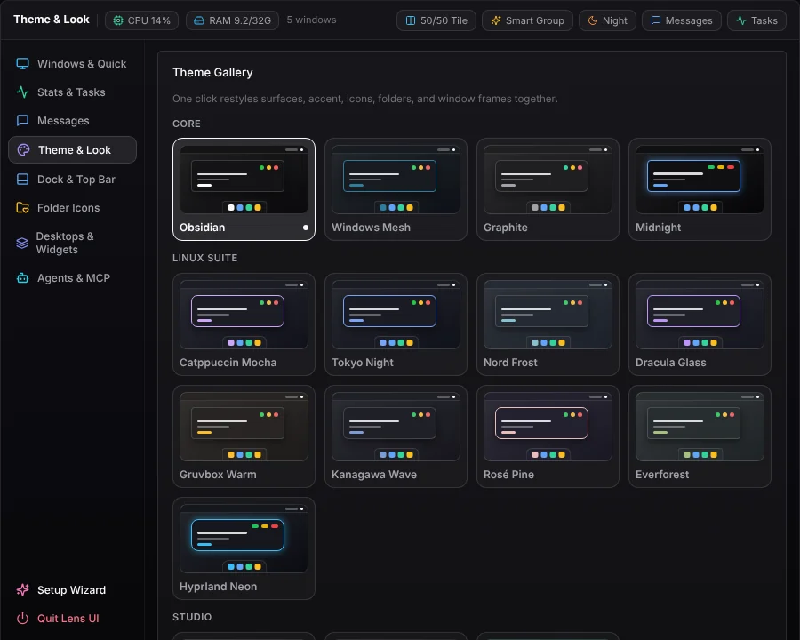
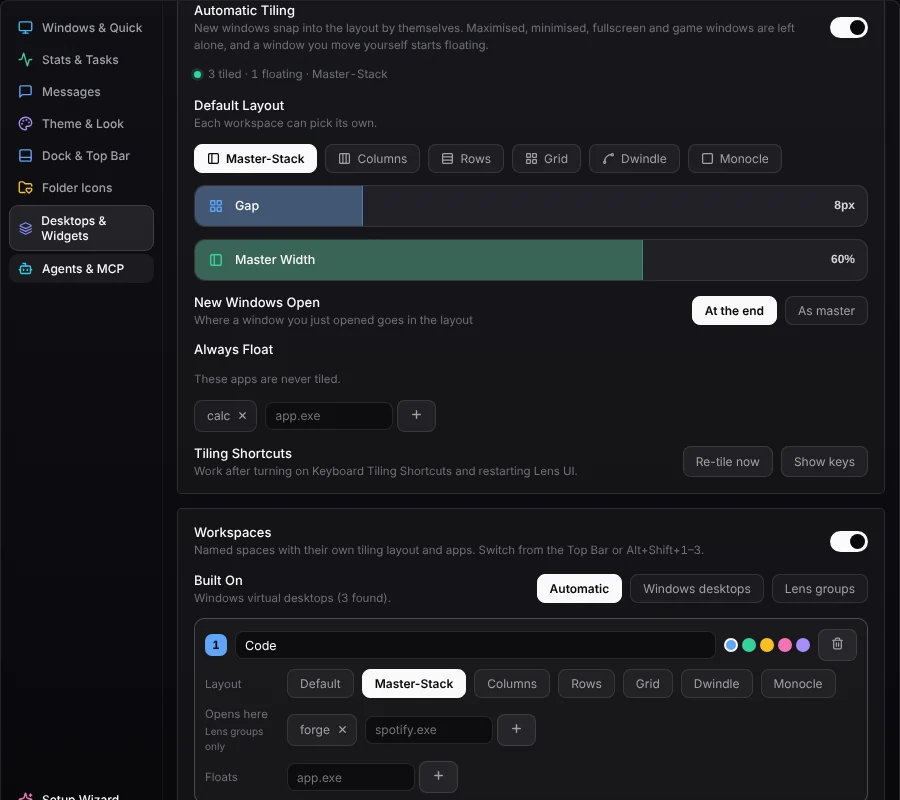
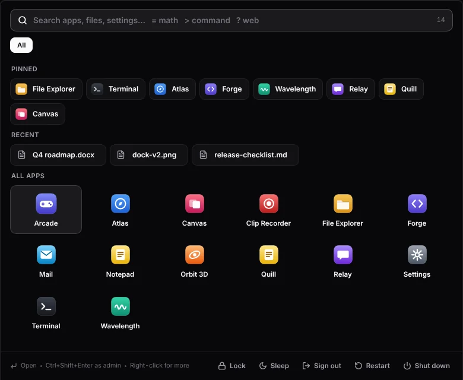

A calmer desktop for Windows.
Lens UI replaces the taskbar with a Dock and a Top Bar, puts real Wi-Fi, Bluetooth, audio and battery controls one click away, and restyles every app window to match your theme. Quit it, and Windows is exactly as you left it.

The Dock opens into search where you already are.
Click the magnifier and a text box spreads out of it. The Dock keeps its size and your apps stay visible to the right; results open just above.
- One search for apps, open windows, files, folders and Windows settings, tolerant of typos.
- It learns from what you pick, so the result you chose for a query rises to the top next time.
2+2*3,72 f to cand15% of 80answer inline.- Pin apps, reorder by dragging, and see unread counts on their icons.

Controls that do the thing, not a link to Settings.
Quick Settings drops from the Top Bar. Every row talks to Windows directly.
- Wi-Fi networks with signal and saved-profile connect, and paired Bluetooth devices.
- Per-app volume, and switching output and microphone devices.
- Battery time left and Windows power mode; keyboard layout switching.
- Brightness and Night Light on the same pane.


One click restyles the shell and every window frame.
A theme pack sets the surface colour, accent, corner radius, icon style, folder icons and window frames together. Titlebars of your other apps change with it, because Lens sets them through the Windows compositor.
Eighteen packs, or your own.
Linux favourites like Catppuccin, Nord and Rosé Pine sit next to two light packs. Save any look as a .lenstheme file to share it, schedule a day pack and a night pack by clock or by sunrise, and follow Windows' own contrast and reduced-motion settings.

Windows that arrange themselves, when you want them to.
Turn on automatic tiling and new windows drop into a layout: master and stack, columns, grid, dwindle or monocle. Maximised, fullscreen and game windows are left alone, and a window you drag yourself starts floating.
- Named workspaces with their own layout and the apps that open there.
- Snap, swap, float and resize from the keyboard, if you switch the shortcuts on.
- Save a set of apps as a session and bring it back, tiled, in one click.

A launcher you can drive without the mouse.
Every installed app in a grid, with pinned and recent rows. Start typing and it becomes the same ranked search as the Dock. Ctrl+Shift+Enter runs as administrator; lock, sleep and restart sit at the bottom and ask twice.
Type > to run a command or ? to search the web. Commands and your own scripts never run without a second confirm.

It never patches Windows.
Lens draws on top of Explorer instead of modifying it. Everything it changes, it can put back.
- Reversible by design
- Quitting restores the taskbar, desktop icons and window styling. If Lens crashes, its crash handler does the same.
Restore-Windows-Taskbar.batworks even when Lens isn't running. - Nothing injected by default
- Window styling is applied from outside other apps' processes. The older in-process helper is off unless you switch it on.
- Games are excluded
- Anti-cheat processes and fullscreen games are skipped by window styling and tiling, with an exclusion list you can extend.
- Your files stay where they are
- Folder icons keep a backup of the original
desktop.ini. Desktop groups are a view; files are never moved. - Off until you turn it on
- Tray hosting, clipboard history, keyboard shortcuts, live wallpaper, plugins, the MCP server and shell replacement all start disabled.
- One button to undo it all
- "Remove all Lens changes" in Control Center, or
Uninstall-Lens-UI.bat, reverts folder icons, startup entries, shell mode and window styling.
Where it stands today.
Lens is an early preview. The whole app compiles on Windows and every screen renders in automated tests, but most features have not yet been tried on a wide range of real machines.
Built and wired
- Dock, Top Bar, Quick Settings, Launcher, Overview and Control Center
- Theme packs with window-frame styling and folder icons
- Unified search, notification centre, workspaces and tiling
- Backup and restore, self-test report, uninstall
Experimental, off by default
- System tray hosting in the Top Bar
- Live wallpaper behind desktop icons
- Replacing Explorer as the Windows shell
- Sandboxed plugins and the MCP server for AI apps
Works on
| Feature | Windows 11 | Windows 10 (1809+) | Linux, macOS |
|---|---|---|---|
| Dock, Top Bar, Launcher, Overview, Quick Settings | Yes | Yes | Planned |
| Theme packs, search, plugins, workspaces, tiling | Yes | Yes | Planned |
| Dark titlebars on every app | Yes | Yes | — |
| Window frame colours and rounded corners | Yes | No (Windows 11 only) | — |
| Glass (Mica / acrylic) | Planned (22H2 and later) | No | — |
Expected support, based on the Windows features each part of Lens uses; testing on real machines is ongoing. Linux and macOS: the interface already runs there, and every Windows module has a portable stand-in that is compile-checked on each change. Real support needs a platform layer that is on the roadmap.
Get it running.
There is no signed installer yet. Building takes a few minutes on Windows 10 or 11 with Rust and Bun installed.
- Install the Rust toolchain (MSVC) and Bun.
- Clone the repository.
git clone https://github.com/orionopenwow/lensui cd lensui - Run it in development mode, or double-click
Launch-Lens-UI.bat.bun install bun run tauri dev - For a standalone build, run
Build-Lens-UI.bat. The installer lands insrc-tauri\target\release\bundle. - Open Control Center and press Run self-test. If something looks wrong, open an issue with the report attached.
Questions people ask.
Is it safe to run?
Lens runs as your user, doesn't need administrator rights and doesn't modify Windows system files. Its changes are listed in the safety section above and are undone when you quit. It is still early software, so keep Restore-Windows-Taskbar.bat handy while you try it.
Will a Windows update break it?
Lens uses documented Windows APIs and sits on top of Explorer rather than patching it, which is the approach least affected by updates. If an update does change something, quitting Lens returns you to the normal taskbar.
Does it affect games or anti-cheat?
No code is injected into other apps by default. Known anti-cheat processes and fullscreen games are excluded from window styling and tiling, and you can add your own exclusions in Control Center.
How do I remove it completely?
Use "Remove all Lens changes" in Control Center, then quit, or run Uninstall-Lens-UI.bat. Both revert folder icons, startup entries, shell mode and window styling. Lens keeps its settings in %APPDATA%\LensUI, which the script offers to delete.
Does it send anything over the internet?
Lens has no telemetry and no account. It only goes online for things you open yourself, such as a web search or a messaging web app in the Messages pane.
Can AI assistants control it?
If you switch on the MCP server, apps like Claude Desktop can list and focus windows, tile them and change theme packs. It listens only on your own machine, and free-form commands wait for you to approve them in Lens.